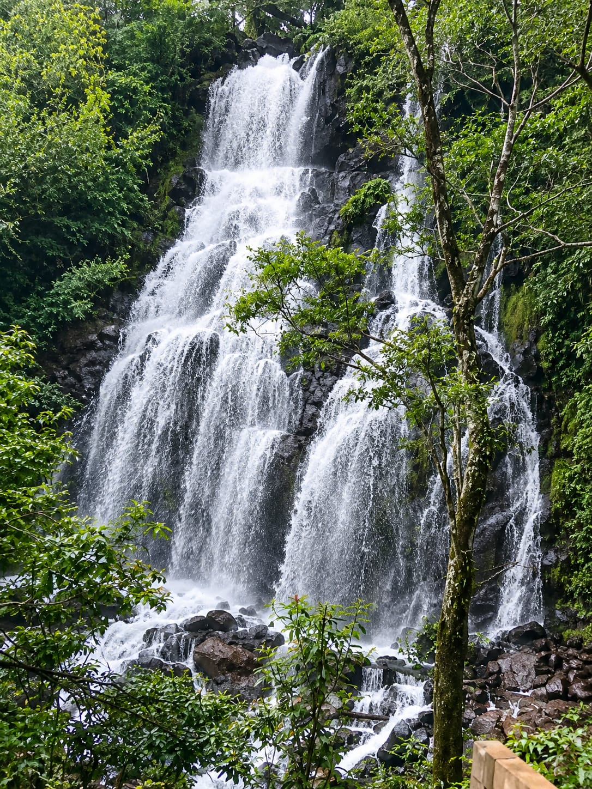

Conoce las cascadas de Valle de Bravo
Cascada Velo de Novia

El nombre Velo de Novia se explica por sí solo: en temporada de lluvias la caída se ensancha hasta parecer la tela blanca y traslúcida de un velo nupcial. Aunque algunas personas escriben «cascada de la novia» o simplemente «velo de novia», el nombre oficial del salto es Cascada Velo de Novia
La Cascada Velo de Novia es una caída natural de unos 35 m dentro del Parque Natural Velo de Novia, en Avándaro, Valle de Bravo, reconocida por su forma que recuerda a un velo blanco y por su entorno boscoso de pinos y oyameles
Cascada Piedra de molino

En la orilla de la carretera hay un *pequeño mirador. Si te paras de frente a la cascada, del lado izquierdo hay unas **escaleritas que te llevan por un sendero un poco más arriba* para verla mejor.
Escondida entre vegetación, tiene *pozas cristalinas* donde se forman charquitos naturales entre las piedras. Los visitantes meten los pies y las manos, y los niños hasta se meten completos a refrescarse.
Cascada Refugio del Salto

La *Cascada Refugio del Salto* es una de las cascadas más bonitas y accesibles de Valle de Bravo, ideal si quieres senderismo ligero y fotos en el bosque sin irte muy lejos del centro.
Se ve más espectacular en *época de lluvia*, cuando el caudal aumenta. En temporada seca puede llevar menos agua, así que si vas por la foto más impresionante, planea tu visita entre junio y septiembre.